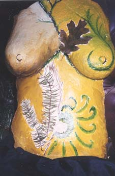

Christine's Home Page
I love to create. 
I have recently become very interested in filmmaking and production. I have completed five screenplays, four shorts and a trailer - and I'm currently working on my first feature-length documentary. You can find out more about my entertainment preferences by visiting my entertainment page and my business Blue Moose Films.
I have also finished my first non-fiction book entitled Redefining Christianity. It is a unique and easy-to-read look at the plethora of theories and obscure historical information available on both the history of organized Christianity and of Jesus Christ (Yeshua bin Joseph), himself. I am currently seeking publication, so if anyone knows of a willing publisher... send them my way! My dream is to have this published and released along with the theatrical release of Magdalen.
The inspiration to write Magdalen and Redefining Christianity came at the end (?) of a long spiritual journey. I began exploring alternative religions in graduate school at TWU after learning more about the real history behind Christianity. My Master's Degree is in English Literature (with an emphasis on Shakespeare), but I have studied Buddhism, Hinduism, Shamanism, various forms of Paganism and historical Christianity on my own. This journey led me to a book called The Woman with the Alabaster Jar and another book called The Vegetarianism of Jesus Christ- both of which inspired me to write Magdalen. I then wrote Re-defining Christianity using the same research from Magdalen
I first became inspired to seriously write for screen after watching Shakespeare in Love. This film spoke to me on several levels. I studied Shakespeare in both undergraduate and graduate schools, but the performance by Joseph Fiennes as Shakespeare in that film brought him truly to life for me. He (Shakespeare) has always been a source of inspiration for me, and seeing him portrayed in this particular light rekindled a passion inside me. When I saw the film for the first time, I felt as if my soul was hibernating. This film renewed my faith in Love as well as inspired me to write again. Both these things ultimately led to me meeting my husband Ethan and writing the four screenplays listed on my home page.
I also love to create crafts and gifts without harming the environment. I am somewhat artistically inclined. To the above right is a sculpture I made in honor of the earth goddess Gaia. I hope to be taking up the air-brush soon for my '71 VW Van.
Christine's Home Page